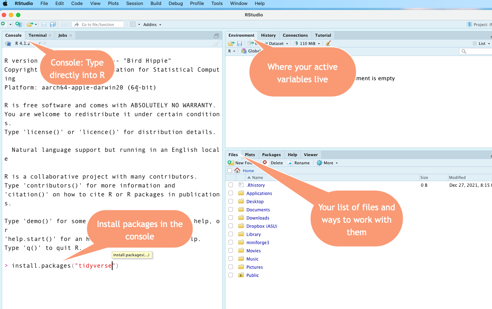

13 Getting started with R
In this chapter
- Get to know the screens
- Issue a few commands to the Console
- Take a tutorial
- Relax!
13.1 Getting to know the RStudio screen
Open the application called RStudio , the fancy car.
Do NOT open R , the engine.
This is what your screen probably looks like:

The Console
The Console is where you can type commands and interact directly with the programming language. Think of it as a very powerful calculator at first. One reason to use it is to install packages.
If you followed the installation demo, you’ve already used the console to install one package using the command install.packages("tidyverse"). Go back and do that part now if you skipped it. It might take several minutes to finish.
Files tab
We won’t be using many of the tabs in the lower right, but the Files tab can help you if you’re having trouble navigating your work. Under the More button, you can choose “Go to working directory”, since that’s where R thinks you’ve parked all of your work. This can be confusing in R, which is why we’ll be working in “projects” that bundle up all of your work in one place.
Environment
The upper right screen is the Environment, which is where your active objects live. An object, sometimes called a “variable” in R, is a named thing. It might be a word, a list of words or numbers, or a data frame (spreadsheet). It can even be a little program called a function that you write yourself. You will understand this better after you take the Posit “Programming basics” tutorial referenced below.
Anything that you want to use has to be loaded or created into that enivronment first. That might involve importing data from Excel or a text file, or creating data yourself in a program.
Typing into the console
When you type this: 5+5 after the > prompt, you’ll get this back after you press Return/Enter: [1] 10
When you type this: "Sarah" (with quotes) after the > prompt, you’ll get this back: [1] "Sarah"
To create a new variable, you’ll use the assignment operator <- (two characters : A less than sign and a hyphen). Here is how I would create the variable called my_name (lower case, no spaces). Notice how it appears in the Environment after being created. Then I can print it by typing the name of the variable instead of the letters of my name in quotes:

Use the keyboard shortcut OPT/ALT - minus sign to create an assignment operator <-
The console remembers your commands, but you have to type them one at a time and it will forget them when you leave for the day. That’s why we’re going to work in programs called Quarto documents most of the time.1
13.2 Take a tutorial
Take the “Programming basics” tutorial from Posit, which is a series of 1- to 2-minute videos. Just watch the videos – you can skip the parts where you type in the code yourself, since it is code that we will rarely use in the future.
Don’t worry that they are very number-centric. Instead, focus on the concepts of functions, arguments and objects. Think of functions as verbs, and arguments or objects as nouns.
For a higher level view, consider reviewing the Gentle Introduction to Programming in the Appendix of this textbook.
Optional hands-on tutorial:
One of the packages you installed earler was called swirl. It contains some interactive tutorials that get you used to typing commands into the Console.
To take it, make sure your cursor is in the Console, and start it by typing swirl::swirl(). (Don’t worry too much what that means right now.) Just do the first chapter called R Programming: The basics of programming in R, and just the first section, called Basic Building Blocks.
13.3 Take a tour
Watch Andrew Heiss’s tour of RStudio.
We will not be using the R scripts as he shows in the end of the video, but many other examples and resources do. Also, as we get into working with Quarto, the “code chunks” work the same way as a script.
13.4 Unlocking packages and the tidyverse
The real power of R comes with packages. Packages are bundles of programs that others have found useful to extend the base R language. R is almost useless without them. There are more than 10,000 packages available for R, each doing a special job.
If you followed along with the tutorial, the last thing you did was install a “package” called the tidyverse. Almost everything we do from now on depends on that step.
The tidyverse is a system of packages, or libraries, that work together with similar grammar and syntax. It’s particularly useful for the kind of work reporters do – importing, cleaning and analyzing data that we get from others. For many reporters (myself included), R was too difficult to learn before the tidyverse came around. We’ll be working almost exclusively within the tidyverse in this course.
When you Google for help, put the word “tidyverse” somewhere in your query. Otherwise, you may get answers that look inscrutable and unfamiliar. Another good practice is to limit your reponses to the last year or two. There have been a lot of changes in the tidyverse.
13.4.1 Installing packages
We need to update your packages and install a few more for our work.
If this is the first time you’ve installed it, the tidyverse will take a while to install, and it will look like it’s just stopped. Be patient. It can take 5 minutes or more.
Option 1: Use the console
Copy these commands into your Console. They ensure that your packages are up to date, and install a few extras that aren’t included in the Tidyverse. You only have to do this once.
update.packages(ask=FALSE)
install.packages(c("tidyverse", "janitor" , "lubridate", "quarto", rmarkdown", "swirl", "pacman"))
Option 2: Use RStudio “Packages” tab
Under the Packages tab in the lower right panel:
- Start by updating all of the packages you might already have installed by pressing the “Update” button.
- Under the Install tab, search for and include the following packages:
- tidyverse
- janitor
- lubridate
- quarto
- rmarkdown
- pacman
- swirl

13.5 Relax!
You’re all set up and we’re ready to start programming. Congratulate yourself - everything is new, nothing is intuitive and the screen is intimidating. You’ve come a long way.
These used to be “R Markdown”. Quarto is the newer implementaiton of it, but you’ll often see R Markdown referenced in other places.↩︎